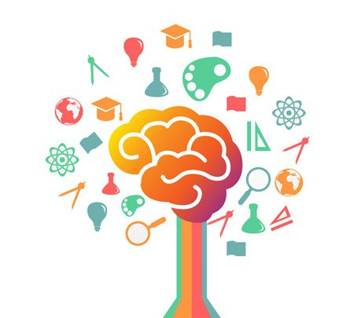

INTRODUCCIÓN
En esta pagina aprenderas paso a paso todo acerca sobre como aprender aprender ingles de una manera super sencilla y rapido.
De seguro te encuentras aqui porque te interesa aprender ingles, o intentas mejorar para tus calificaciones.Pero esta pagina no te enseñara de la forma tradicional, que se basan en Gramatica, y segun estudios, enseñar gramatrica es la peor manera de aprender un idioma; desafortunadamente, esta es la manera en la que el sistema educativo enseña ingles, y no es raro que muchos estudiantes no terminen de comprender este idioma, y no es porque no sepan o no sean inteligentes, si no, que la escuela no te lo esta enseñando de la manera correcta.
Por eso en esta pagina, tu mismo desarrollaras tu propia estructura de aprendizaje, sin gramatica, se enfocara mas en la compresión.
Si quieres saber más de el porque no es recomendable enseñar gramatica te dejo este articulo: SIN GRAMATICA:
¿Porqué es importante aprender ingles?

Aprender ingles es una necesidad para poder comunicarse y acceder al mercado laboral. No solo nos sirve para mejorar en nuestras calificaciones, si no tambien, para poder comunicarnos con diferentes personas del mundo, leer articulos, escuchar musica, para trabajar o incluso vivir en el extranjero.
También, hay estudios cientificos que explican que aprender un idioma ayuda mucho a nuestro cerebro, a esto se le llama PLASTICIDAD CEREBRAL
que en resumen desarrolla nuestras neuronas en la zona del habla, que lo hace diferente a aquellas personas que no lo hacen. Lo que significa que una persona bilingue o poliglota tiene más desarrollo cerebral.
NO SOLO ESO, SI NO TAMBIÉN:
- Se desarrolla más sustancia gris:
Es el componente del cerebro que influye de manera determinante en el proceso de la información.
- Conserva mejor la materia blanca:
Su principal función es la correcta transmición de la información cerebral.
 - Mejora las capacidades cognitivas:
- Incrementa la atención:
Es el estado de observación y de alerta que nos permite tomar conciencia de lo que ocurre en nuestro entorno.
- Menor posibilidad de demencia:
Es el deteriodo de la memoria y capacidades cognitivas. - Potencia la memoria:
Es la capacidad del cerebro de retener información y recuperarla voluntariamente. - Tener un buen empleo:
En el mercado global, la mejor manera de comunicación es el ingles.
Ejecutar tareas diversas:
Son las áreas del cerebro que cumplen funciones diferentes.
TEMARIO
Ahora que sabes los beneficios que trae aprender un idioma, ¿No te gustaria seguir aprendiendo?,
Muy bien dicho!!! y ahora por eso puedes elegir el tema con el que quieras empezar a aprender.
¡¡¡SIGUE ADELANTE!!